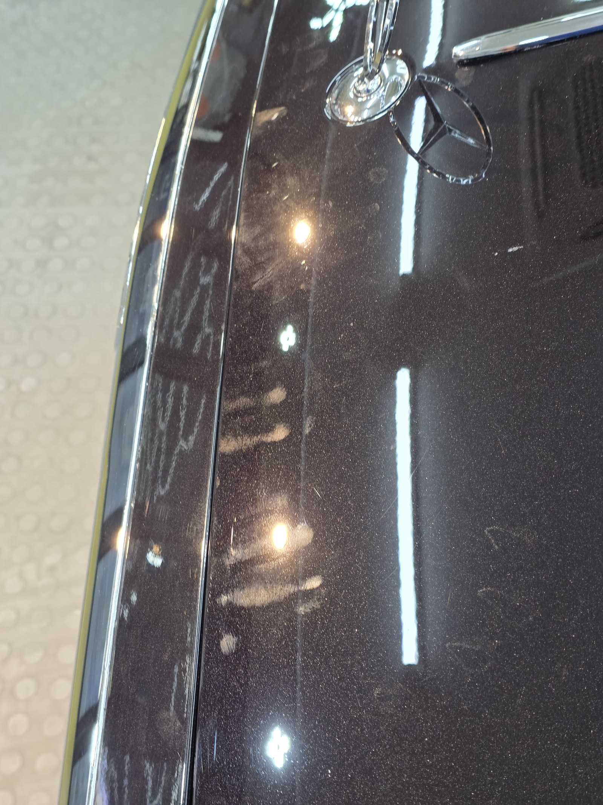
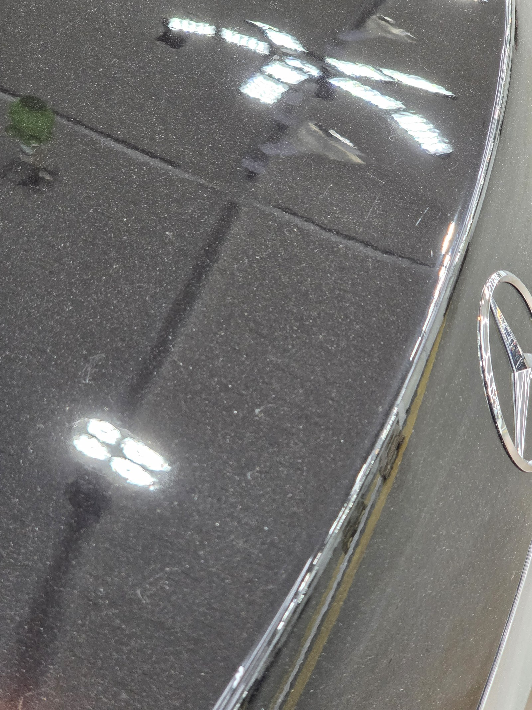
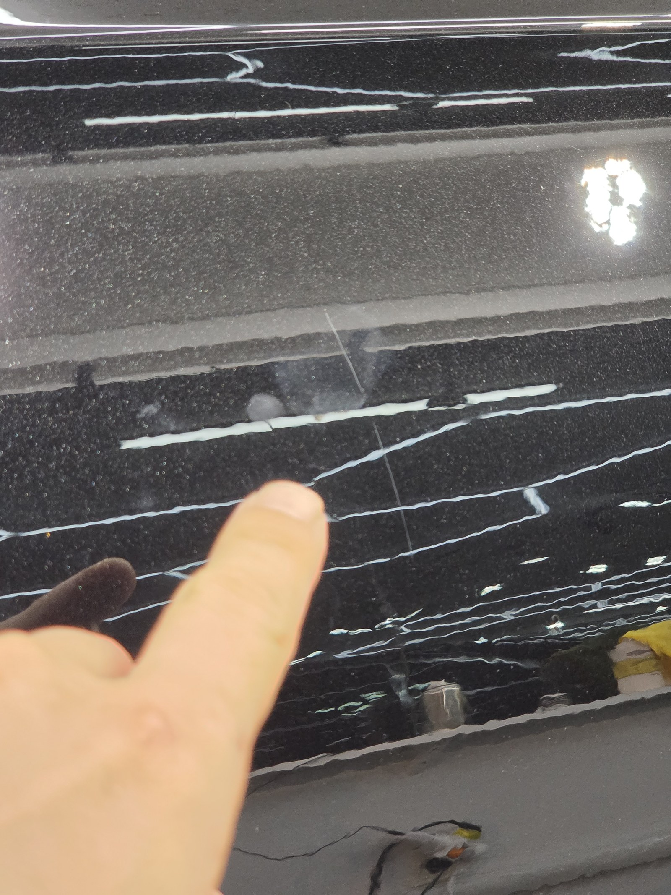
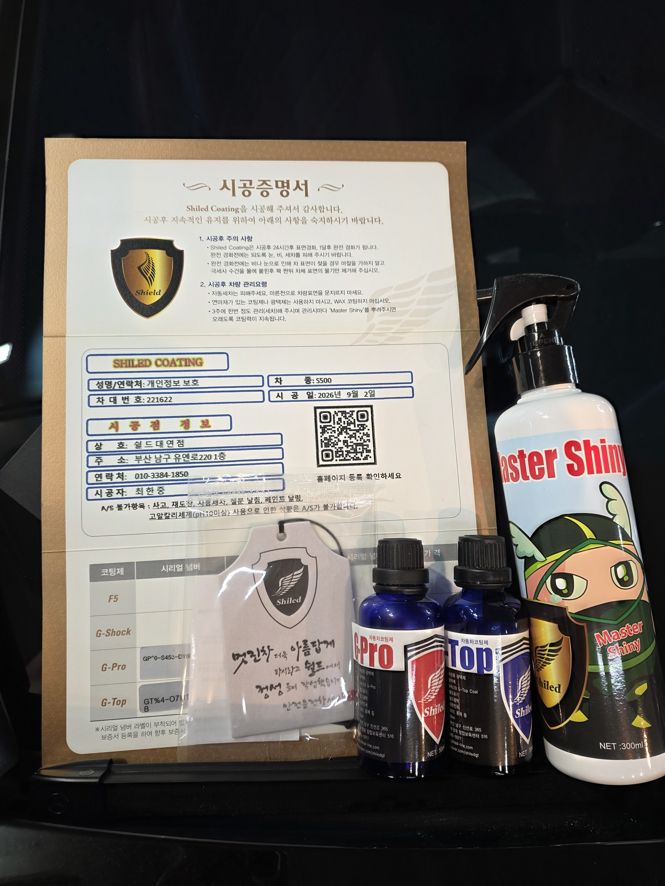
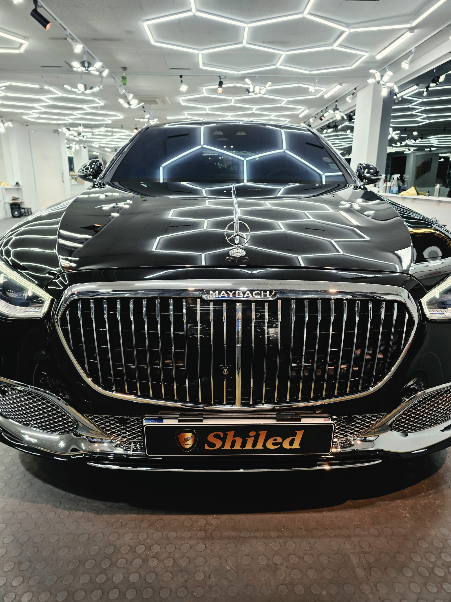
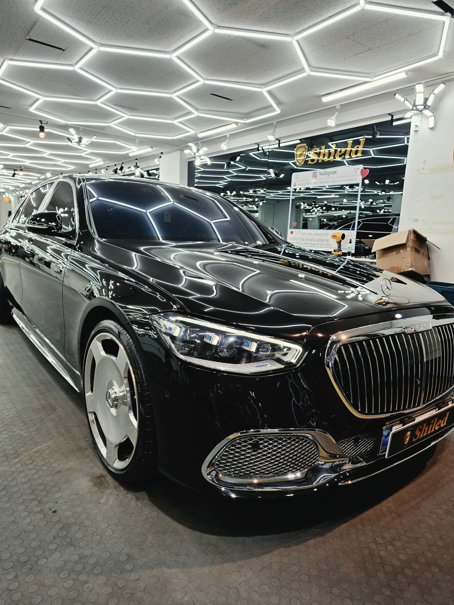
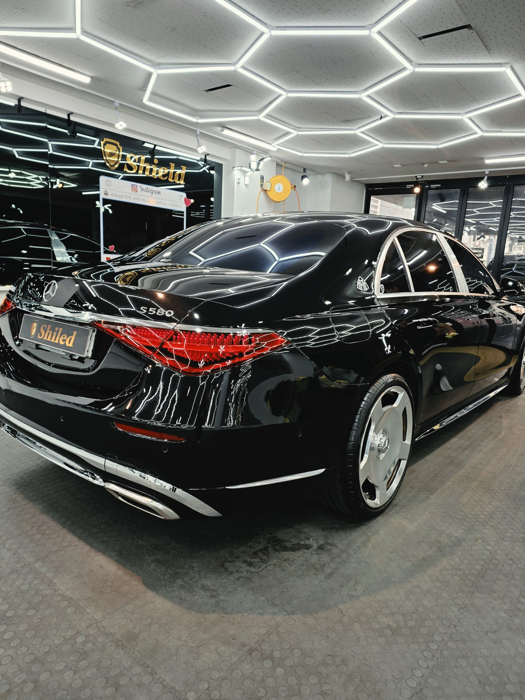
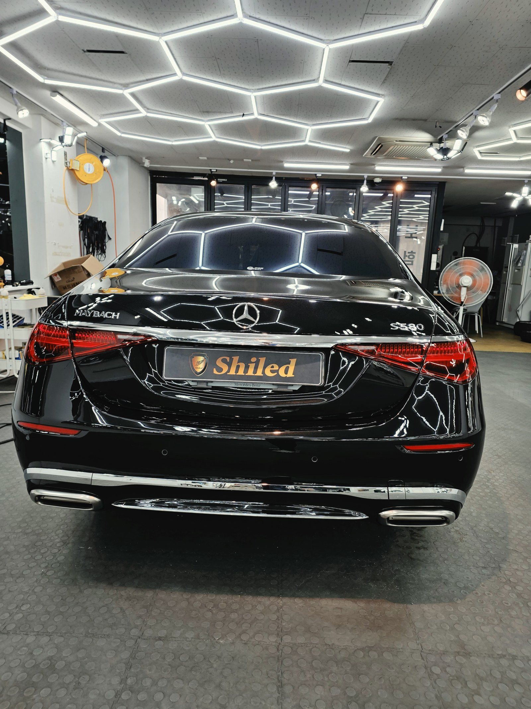
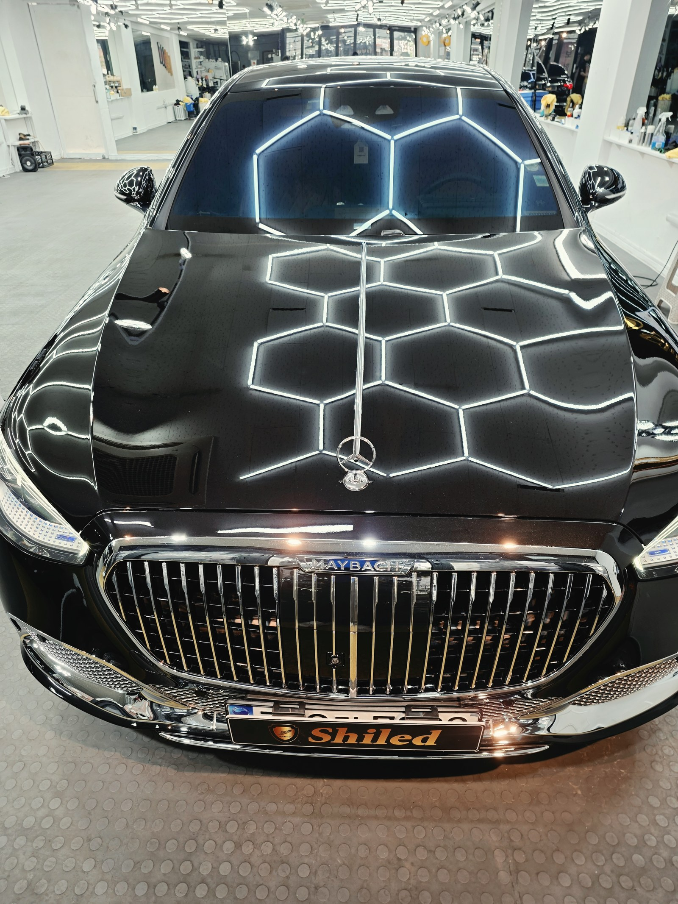

벤츠 마이바흐 S580 검정입니다.
이 차는 부산 광택으로 스월과 스크래치를 걷어낸 뒤, G-PRO+G-TOP 듀얼코팅까지 진행했습니다.

입고 당시 후드 위로 매장 격자 조명이 비쳤는데, 한 줄로 곧게 이어져야 할 반사선이 곳곳에서 잘게 끊기고 갈라졌습니다. 조명이 갈라지는 자리마다 스월이 촘촘히 쌓여 있었다는 뜻입니다.
마이바흐 같은 최상급 세단일수록 도장면이 예민합니다
차값이 올라갈수록 오너의 눈높이도 함께 올라갑니다. 남들 눈에는 안 보이는 잔기스도, 정작 차주 눈에는 계속 밟힙니다.
세차 한 번 한 번이 쌓여 만드는 흔적이라, 아무리 조심해도 시간이 지나면 표면에 남습니다. 이 정도급 차를 오래 아껴 타신 차주분이라면, 도장면 볼 때마다 마음이 편치 않으셨을 겁니다.

사이드 펜더의 엠블럼 옆쪽도 가까이서 보면 방향이 제각각인 실선 자국이 겹쳐 있었습니다. 한 방향으로만 그어진 게 아니라 여러 각도로 얽혀 있는 걸 보면, 세차를 거듭하며 쌓인 전형적인 스월(swirl)입니다.

도어 유리 하단 몰딩 쪽은 손끝으로 직접 짚어 확인했습니다. 눈으로만 보면 지나치기 쉬운 자리지만, 손끝을 대보면 결이 다르게 걸리는 스크래치가 선명하게 잡히는 구간이었습니다.
기술자의 팁
검정은 빛을 그대로 반사하는 색입니다. 그래서 다른 색보다 스월이 유독 잘 보입니다. 방치할수록 겹겹이 쌓여 더 도드라지니, 눈에 띄기 시작할 때 광택으로 정리하는 편이 좋습니다.
부산 광택으로 스월부터 걷어냅니다
좋은 코팅도 스월이 남은 면 위에 올리면 흠집을 그대로 가둔 채 굳어버립니다. 그래서 순서가 중요합니다. 광택으로 표면을 먼저 정리하고, 그 위에 코팅을 올리는 순서입니다.
디테일링 세차로 표면 오염을 걷어내고, 철분·타르 제거제로 박힌 오염을 녹여냅니다. 몰딩과 고무 부위는 마스킹으로 보호하고, 탈지까지 끝내야 비로소 광택을 올릴 면이 됩니다. 그다음 스월 깊이에 맞춰 컴파운드와 패드 조합을 바꿔가며 표면을 정교하게 깎아냅니다. 무조건 세게 깎는 게 정답은 아닙니다. 필요한 만큼만 깎아야 도장 수명도 함께 지킬 수 있습니다.
광택 위에 G-PRO + G-TOP, 듀얼코팅
스월을 걷어낸 면 위에는 G-PRO와 G-TOP 두 겹을 순서대로 올렸습니다.
G-PRO는 저희 코팅제 중 경도가 가장 높은 하드코팅으로, 스크래치에 강한 단단한 바탕을 잡아줍니다. 그 위에 G-TOP을 올려 발수성과 방오성을 마감합니다. 검정 도장은 광택 공정만으로도 발색이 충분히 살아나는 색이라, 이 차는 발색보다 내구성과 관리 편의를 우선해 듀얼코팅으로 진행했습니다.

모든 시공 차량에 시공증명서와 전용 관리제 마스터샤이니를 함께 드립니다
마감 후
매장 헥사 조명이 후드부터 루프, 트렁크까지 왜곡 없이 한 줄 한 줄 또렷하게 떨어집니다.
스월로 갈라져 있던 반사가 이제는 매끈한 육각 라인 그대로 이어집니다. 검정 본연의 깊은 발색 위에, 듀얼코팅 특유의 단단하고 매끈한 광이 한 겹 더 올라간 상태입니다.





광택·코팅 후, 이렇게 관리하세요
광택도 코팅도 시공으로 끝이 아닙니다. 관리로 수명이 갈립니다.
완전 경화 전(약 하루)에는 비·눈·세차를 피해 주십시오. 브러시가 도는 자동세차(기계세차)는 스월을 다시 만드는 주된 원인이니 피하시는 게 좋습니다. 손세차 위주로 관리하시고, 3주에 한 번 전용 관리제 마스터샤이니를 뿌려주시면 광택면과 코팅력이 오래 유지됩니다.
자주 묻는 질문
Q. 광택과 유리막코팅은 어떻게 다른가요?
A. 광택은 이미 생긴 스월과 스크래치를 표면을 미세하게 깎아 정리하는 공정입니다. 유리막코팅은 그렇게 정리된 면 위에 보호막을 올리는 공정입니다. 이 차는 광택으로 먼저 스월과 스크래치를 걷어낸 뒤, 그 위에 듀얼코팅을 올렸습니다.
Q. 이 차는 왜 듀얼코팅을 선택했나요?
A. G-PRO의 스크래치 내성과 G-TOP의 발수·방오성을 함께 올리는 조합입니다. 검정 도장은 광택만으로도 발색이 충분히 살아나 발색보다 내구성과 관리 편의를 우선해 듀얼코팅으로 진행했습니다.
Q. 고급차일수록 광택 작업이 왜 필요한가요?
A. 오너의 눈높이가 높아 미세한 스월도 조명 아래서 쉽게 드러납니다. 코팅만 올리면 스월이 코팅막 아래에 그대로 갇히기 때문에, 광택으로 표면을 먼저 정리한 뒤 코팅을 올려야 결과가 깨끗합니다.
Q. 쉴드광택 위치와 예약은 어떻게 하나요?
A. 부산 남구 유엔로220 1F 쉴드광택입니다. 예약·상담은 010-3384-1850, 대표 최한중이 직접 상담하고 책임 시공합니다.
마이바흐급 차량일수록 광택으로 표면을 먼저 정리한 뒤 코팅을 올려야 결과가 다릅니다.
부산 광택 전문, 제품을 직접 만드는 사람이 직접 시공합니다.
부산에서 광택·유리막코팅을 고민 중이시면 편하게 연락 주십시오.
어떤 차를 타냐보다 어떻게 타냐가 중요합니다~!
시공 중에는 전화를 받지 못할 때가 많습니다.
카카오톡으로 차종과 원하시는 시공을 남겨주시면 확인 후 답변드립니다.
쉴드광택 · 부산 남구 유엔로220 1F · 대표 최한중